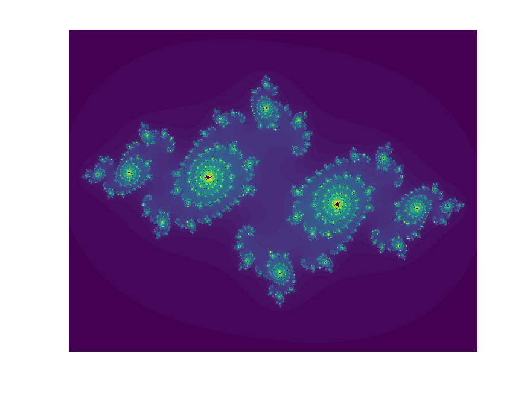

Systems
This is a skeleton to list items to be detailed in the near future.
FreeDOS and Linux
FreeDOS is available from http://www.freedos.org/.
FreeDOS is an open source DOS-compatible operating system that you can use to play classic DOS games, run legacy business software, or develop embedded systems. Any program that works on MS-DOS should also run on FreeDOS.
It is notable that v1.3 provides liveCD and liteUSB which could be useful.
Here describes how to convert VMDK format to iso, https://www.ilovefreesoftware.com/26/featured/how-to-convert-vmdk-to-iso-in-windows.html, e.g.,
qemu-img convert -f vmdk FD13LITE.VMDK pd.raw
dd if=pd.raw of=pd.iso
We can then use rufus, https://rufus.ie/, to generate a bootable USB allowing for disk partition by fdisk -- in fact rufus itself can produce a bootable USB nevertheless with no utilities.
This is useful to install Linux on very old computers, e.g., reorganise hard drive and then install Fedora from a liveUSB generated from Fedora Media Writer, https://getfedora.org/en/workstation/download/.
There are multiple routes to install particular Linux software; one may prefer to install them as standable but it may also come handy use mini-environments such as Anaconda, Miniconda, Linuxbrew or those already in system (e.g. Ubuntu) archive.
A rich source of tips are in the-art-of-command-line and awesome-shell.
The following command gives bit information (32 or 64)
getconf LONG_BIT
The LSB (Linux Standard Base) and distribution information is given with
lsb_release -a
Under Ubuntu, this could be made available with sudo apt-get install lsb-core.
Under Fedora, you may be prompted to install package redhat-lsb-core. Related commands are uname -a and lscpu.
The CPU speed can be seen with
watch -n.1 "cat /proc/cpuinfo | grep \"^[c]pu MHz\""
The screen utility is operated as follows,
screen -S <my-screen-session>
screen -ls
screen -r <my-screen-session-id>
An introduction to Linux Access Control Lists (ACLs), https://www.redhat.com/sysadmin/linux-access-control-lists.
To enable color with nano, try
find /usr/share/nano/ -iname "*.nanorc" -exec echo include {} \; >> ~/.nanorc
Fedora
This has already been covered above, i.e., https://getfedora.org/workstation/download/.
Ubuntu
Releases are available from http://releases.ubuntu.com and packages are listed at https://packages.ubuntu.com/.
Often it is helpful to run
sudo apt update
sudo apt upgrade
to be in line with the current release; one can check for updates with sudo apt list --upgradable.
To resize a virtual disk, follow steps here, https://blog.surges.eu/virtualbox-how-to-solve-the-issue-with-low-disk-space/.
The nautilus desktop can be reset with
sudo apt install gnome-tweak-tool
gnome-tweaks
nautilus-desktop
The Unity desktop can be installed with
sudo apt-get install unity-session
sudo dpkg-reconfigure lightdm
Non-root installation may be necessary, e.g.,
apt download gir1.2-webkit-3.0
apt -i gir1.2-webkit-3.0_2.4.11-3ubuntu3_amd64.deb --force-not-root --root=$HOME
Alternatively, we use source package, typically
apt-get source package
cd package
./configure --prefix=$HOME
make
make install
To unpack a package, one can do
dpkg -x package.deb dir
When a package URL is available, we can use wget, ar x, xz -d, tar xvf combination to do so.
Its archive, http://archive.ubuntu.com/ubuntu/pool/universe, includes beagle, eigensoft, plink, plink-1.9, among others, which can be installed canonically with sudo apt install.
sudo apt-get install libcanberra-gtk3-module
It is useful to use sudo apt install tasksel, then one can use sudo tasksel.
One would get error message such as "You must put some ‘source’ URIs in your sources.list" which can be done as follows
sudo apt-get update
sudo nano /etc/apt/sources.list
# uncomment deb-src here
apt-get source hello
The system hibernation can be done with sudo systemctl hibernate.
Some operations on gnome extensions are given below,
sudo apt install gnome-shell-extensions
sudo apt search gnome-shell-extension
gnome-shell --help
sudo apt install gnome-shell-extension-prefs
# https://extensions.gnome.org/extension/307/dash-to-dock/
sudo gnome-extensions install dash-to-dockmicxgx.gmail.com.v71.shell-extension.zip
sudo apt install gnome-tweaks
Installation of dash-to-dock from GitHub proceeds as follows,
git clone https://github.com/micheleg/dash-to-dock
sudo apt install gettext
make -C dash-to-dock install
Note that gnome-tweak-tool used earlier on has been updated to gnome-tweaks, which removes gnome shell extensions support from version 40 and it is possible
with gnome-shell-extension-prefs. Then the Extension apps enables 'dash-on-dock' as with user themes and Glassy/Glassy-dark through gnome-tweaks
by unpacking the relevant files to /usr/share/themes. For WhiteSur, various operations are given below,
# https://www.gnome-look.org/p/1403328/
# https://github.com/vinceliuice/WhiteSur-gtk-theme
mkdir ~/.themes
mkdir ~/.icons
tar fvzx WhiteSur-gtk-theme-2022-02-21.tar.gz
cd WhiteSur-gtk-theme-2022-02-21/
./install.sh -s 220
sudo apt install dbus-x11
./tweaks.sh -d
tar xfz WhiteSur-icon-theme-2022-03-18.tar.gz
cd WhiteSur-icon-theme-2022-03-18/
/install.sh
cd ~/.icons
# https://github.com/vinceliuice/WhiteSur-icon-theme
# https://www.gnome-look.org/p/1405756/
tar xf 01-WhiteSur.tar.xz
sudo apt install dconf-editor
dconf-editor &
gsettings set org.gnome.shell.extensions.dash-to-dock extend-height false
gsettings set org.gnome.shell.extensions.dash-to-dock dock-position BOTTOM
gsettings set org.gnome.shell.extensions.dash-to-dock transparency-mode FIXED
gsettings set org.gnome.shell.extensions.dash-to-dock dash-max-icon-size 64
gsettings set org.gnome.shell.extensions.dash-to-dock unity-backlit-items true
from dconf-editor, follow navigation "org > gnome > shell > extensions > dash-to-dock" to customise, see here.
Finally, perhaps more appealing is the gnome extension dash-to-panel.
Here is information on file sharing, https://www.c-sharpcorner.com/article/how-to-share-files-between-ubuntu-and-windows-10/
Oracle VirtualBox
7.1.4
This requires Visual Studio C++ 2.19, which can be downloaded, e.g. https://aka.ms/vs/17/release/vc_redist.x64.exe.
Windows 7
To use VirtualBox under Windows 7, one needs to enable virtualisation within security section of BIOS setup. To find out system info, one can run
systeminfo
A useful tip is from https://blog.csdn.net/xz360717118/article/details/67638548
Failed to instantiate CLSID_VirtualBox w/ IVirtualBox, but CLSID_VirtualBox w/ IUnknown works.
2017年03月28日 16:50:30 一只猪儿虫 阅读数 17551 标签： virtualbox win7 更多
个人分类： 服务器
版权声明：本文为博主原创文章，未经博主允许不得转载。 https://blog.csdn.net/xz360717118/article/details/67638548
我是 win7 64位
解决办法：
1， win+r 快捷键打开 “运行”，输入regedit 打开注册表
2，找到 HKEY_CLASSES_ROOT\CLSID\{00020420-0000-0000-C000-000000000046}
InprocServer32 修改 第一行（默认）的值为 C:\Windows\system32\oleaut32.dll
3，找到HKEY_CLASSES_ROOT\CLSID\{00020424-0000-0000-C000-000000000046}
InprocServer32 修改 第一行（默认）的值为 C:\Windows\system32\oleaut32.dll
4，完事。（我修改了完了 也没试用，直接重启电脑 然后成功了）
Actually, there is no need to reboot Windows at Step 4.
It is possible that installation of Ubuntu could be freezed, in which case a proposal was to proceed with disabling 3D Acceleration and increasing the number of CPUs to 2-4, see https://www.maketecheasier.com/fix-ubuntu-freezing-virtualbox/.
However, our experiment showed that one can enable 3D Acceleration and two CPUs for installation but it is necessary to disable 3D Acceleration and
reset CPU to be one for a system with one CPU after installation. The system informatino can be obtained with systeminfo command as described above.
Fedora & shared folders
The guest additions under Fedora 28 is furnished with
sudo dnf update
sudo dnf install gcc kernel-devel kernel-headers dkms make bzip2 perl
cd /run/media/jhz22/VBox_GAs_5.2.12/
sudo ./VBoxLinuxAdditions.run
To set up shared folders and enforce shared clipboard for bidirectional copy between Linux and Windows,
# shared folders
sudo mount -t vboxsf -o uid=jhz22 C /home/jhz22/C
sudo mount -t vboxsf -o uid=jhz22 D /home/jhz22/D
# shared clipboard
killall VBoxClient
sudo VBoxClient-all
Another attempt is through VBoxMange, e.g., VBoxManage.exe sharedfolder add "22.04" --name U --hostpath "U:\".
For Fedora 31, see https://www.if-not-true-then-false.com/2010/install-virtualbox-guest-additions-on-fedora-centos-red-hat-rhel/.
See https://www.nakivo.com/blog/make-virtualbox-full-screen/ on full-screen size, in particular,
"\Program Files\Oracle\VirtualBox\VBoxManage" setextradata "32" VBoxInternal2/EfiGraphicsResolution 1920x1080 for virtual machine 32.
Compression
Here are the steps, quoting http://www.netreliant.com/news/8/17/Compacting-VirtualBox-Disk-Images-Linux-Guests.html, for compressing large .vdi:
# Linux
dd if=/dev/zero of=zerofillfile bs=1M
rem Windows
path D:\Program Files\Oracle\VirtualBox
VBoxManage modifyhd --compact "ubuntu18.04.vdi"
OVA file
This is useful, e.g., Windows 11 development environment.
Import the OVA file into Oracle VirtualBox:
- Open Oracle VirtualBox.
- Select FileImport Appliance.
- Click Folder to browse to the directory where the OVA file was downloaded.
- Select the Okta Access Gateway OVA file, and then click Open.
- Click Next.
See https://help.okta.com/oag/en-us/content/topics/access-gateway/deploy-ovb.htm.
Windows 11
Official site
From the official ISO location, https://aka.ms/DownloadWindows11, select "Download Windows 11 Disk Image (ISO) for x64 devices.".
Verify your download after download, https://www.microsoft.com/en-us/software-download/windows11, from Windows PowerShell,
Get-FileHash D:\Downloads\Win11_23H2_EnglishInternational_x64v2.iso
Algorithm Hash Path
--------- ---- ----
SHA256 705AC061688FFD7F5721DA844D01DF85433856EAFAA8441ECE94B270685CA2DB D:\Downloads\Win11_23H2_EnglishInternational_x64v2.iso
and also
Get-FileHash D:\Downloads\Win11_24H2_EnglishInternational_x64.iso
Algorithm Hash Path
--------- ---- ----
SHA256 D5A4C97C3E835C43B1B9A31933327C001766CE314608BA912F2FFFC876044309 D:\Downloads\Win11_24H2_EnglishInternational_x64.iso
as listed here, https://learn.microsoft.com/en-us/powershell/module/microsoft.powershell.utility/?view=powershell-7.4.
Hash values for the ISO files for Each Language
| Country Locale | Hash Code |
|---|---|
| Arabic 64-bit | 97ED2DF27DEBE5A8E94FB37BE4383EB8516D5C24117793BDA5C1E13568D3F754 |
| Bulgarian 64-bit | 1C1BD6E96290521B7E4F814ACA30C2CC4C7FAB1E3076439418673B90954A1FFC |
| Chinese Simplified 64-bit | BD1ECBA89BC59B7B62EF12C88C4E70D456EDAC10B969ECB3299EBD458B1F0FB3 |
| Chinese Traditional 64-bit | B92C3D6D428D12CF78A8D287B8FB28FFBC44D4A36B74C1B121C3CF443DC67ED2 |
| Croatian 64-bit | 95C7008AB1B0BA65212A36FB728AC93B9D7611400A78393FE7B319ED5B74AC5C |
| Czech 64-bit | 76120E535DB895D0EA69F47D55B836940821352A010DEDFCBCFC1E22E619FC4B |
| Danish 64-bit | D5D34DFFE45BA557581ADA14AC025DB8AA58989D054706061B7D0E5B47F5FDB9 |
| Dutch 64-bit | EE9BC545673D8F954A1EDAC691D749438D3E4DFA10A75D2519F79E3708D79FDC |
| English 64-bit | B56B911BF18A2CEAEB3904D87E7C770BDF92D3099599D61AC2497B91BF190B11 |
| English International 64-bit | D5A4C97C3E835C43B1B9A31933327C001766CE314608BA912F2FFFC876044309 |
| Estonian 64-bit | D12DC03FA15A7F436A800692E9BA30DBDDAA4CD6122DD71719A2898E953B5407 |
| Finnish 64-bit | D6057E058021A9DF8A02B7BB16331D88C38E8BB63D5AD897D094E0DF6C6ADB5A |
| French 64-bit | B73AA55DB50D2AD348F61C6537DA05C0D6DED78A143763454E977BE85B444119 |
| French Canadian 64-bit | 3CA47351DAD16BD3F7AFA27CDEB321DD726B79859DE8D2769359C7621DE38EC4 |
| German 64-bit | 96E036F1219F9EE59F96312CE43EC7DF093E768383A77132750271940926A013 |
| Greek 64-bit | 92248F9F5A8735337D4B0DCCE4DD13348F8718858590FD9D1EB00020B5AFB33A |
| Hebrew 64-bit | 27D8090B9266A2DAC04E403FE63E46ADE661A5661BF26CA5EBB1A2F13245E86F |
| Hungarian 64-bit | 7B58807592AEB2FC5DDF5AF9749FA023CE9165AA4A1BF4F4741709F8AA2EE9D3 |
| Italian 64-bit | D95EC65EC06B4036835C7571FE0108159848D2883EF5DA3A67E480130B1F5862 |
| Japanese 64-bit | A1E1BCB6C014F39E4A324EC24DB1B745EE62617D29A450BF7B2596A3DCCECD7D |
| Korean 64-bit | 63ED86ADFC53F464649478F931EAE39A42DB3FD86C266C9B5AF7F8E19D318C51 |
| Latvian 64-bit | F4C2BF7C16576E6D631070D7B7CF6F55E8359D0729B571C570DC6F39D77D9EA6 |
| Lithuanian 64-bit | 23B14643B0AD6FDD0231EA201C5E1B000912EE3A0542F1B1F6907DB470AE7D7B |
| Norwegian 64-bit | 6CBD6C3FED9CE08AF85420F19D01C287FC58EC0C42DC7409D1D5C341CEB6492B |
| Polish 64-bit | 654273603A945EBA3B185FD5D2C22207A0EB788B5E3402F71E6D0839B3026943 |
| Brazilian Portuguese 64-bit | 1BC63E9C62FE3EB7E46778F24C790933770FA7430304583BBDF96B47A5D61F1F |
| Portuguese 64-bit | FAAFEDFC301A381B0712FC8DB9F0A16ADE2716B998DD4855D0A38172A9A87AB4 |
| Romanian 64-bit | 8B23AD43DF35EB75FADDFDFC85D616A001A4D72C757E5286011E3DC9452A5862 |
| Russian 64-bit | D0FBDB93864BF6C8ADE844473C9600EBB031C8BB656A272C736E45DFBD9B3BC9 |
| Serbian Latin 64-bit | 566047460EEA2F0E0D36E7A378DCFEEA79D7D3C0328227646BE4AB9AC39A9E36 |
| Slovak 64-bit | 5B77F2B5F7C77ABF68E628AC37A8841BB1058B7173C1C76DC5A5F6C5BBA855FD |
| Slovenian 64-bit | 73F0DC7CC15885F565C76D78D54E4E4D9934720FFE583B52EFDDA2E2457402D7 |
| Spanish 64-bit | 708AF7C9AC63B7EB045CA9B196568758B6C1749E8D13CADE61FAACBC7C66D142 |
| Spanish (Mexico) 64-bit | BA7A9B9A2052DEF8C24BCB88C76A47B2E6A6C6EE547EED226B9702C5C63AFC69 |
| Swedish 64-bit | F3674D377253E2D12635FDEAB76193E80BD80C56A41D10AB9CCEFDB0CDF1AD82 |
| Thai 64-bit | CAD5590347376103E369D7E04941B94C037F4CC6C75D81DC50E194FFA87C8CF8 |
| Turkish 64-bit | A47E054FE0B762F5B48D08E2B6F768F4B1CA0BC6DB831A76E829F92E578483AF |
| Ukrainian 64-bit | 68BABB954E4BFDF8A03ABC188D5120CF12D4DCA3CAE68EB1BFD4B64F872826E2 |
Some changes as from October 2024,
Microsoft Windows [Version 10.0.22631.4249]
(c) Microsoft Corporation. All rights reserved.
C:\Windows\System32>reg.exe delete "HKLM\SOFTWARE\Microsoft\Windows NT\CurrentVersion\AppCompatFlags\CompatMarkers" /f 2>NUL
The operation completed successfully.
C:\Windows\System32>reg.exe delete "HKLM\SOFTWARE\Microsoft\Windows NT\CurrentVersion\AppCompatFlags\Shared" /f 2>NUL
The operation completed successfully.
C:\Windows\System32>reg.exe delete "HKLM\SOFTWARE\Microsoft\Windows NT\CurrentVersion\AppCompatFlags\TargetVersionUpgradeExperienceIndicators" /f 2>NUL
The operation completed successfully.
C:\Windows\System32>reg.exe add "HKLM\SOFTWARE\Microsoft\Windows NT\CurrentVersion\AppCompatFlags\HwReqChk" /f /v HwReqChkVars /t REG_MULTI_SZ /s , /d "SQ_SecureBootCapable=TRUE,SQ_SecureBootEnabled=TRUE,SQ_TpmVersion=2,SQ_RamMB=8192,"
The operation completed successfully.
C:\Windows\System32>
C:\Windows\System32>reg.exe add "HKLM\SYSTEM\Setup\MoSetup" /f /v AllowUpgradesWithUnsupportedTPMOrCPU /t REG_DWORD /d 1
The operation completed successfully.
C:\Windows\System32>
See also ZDNET, https://www.zdnet.com/article/how-to-upgrade-your-incompatible-windows-10-pc-to-windows-11/ & Rufus, https://rufus.ie/en/.
It is reported that the changes above have been implemented in Rufus 4.6.
Build on the fly
git clone https://github.com/AveYo/MediaCreationTool.bat
cd MediaCreationTool.bat
MediaCreationTool.bat
and also https://massgrave.dev/windows_11_links, https://github.com/Raphire/Win11Debloat.
Further information
CloneVDI is described in this thread, https://forums.virtualbox.org/viewtopic.php?f=6&t=22422.
Moreover, https://www.maketecheasier.com/shrink-your-virtualbox-vm/ and http://bytefreaks.net/windows/reclaim-empty-space-from-virtualbox-vdi-disk-images-by-shrinking.
vdi.md as in GWAS-2017 and now listed in GDCT
Since one may allocate only part of RAM to VirtualBox, it is often necessary to run program under MS-DOS, e.g., sections on DEPICT.
Additional note: 6.1.4 has problem with its Guest Additions. To enable copy/paste through clipboard one can use VBoxGuestAdditions_6.1.97-136310.iso as discused here, https://www.virtualbox.org/ticket/19336.
When VirtualBox failed to start a session, one can enter MS-DOS prompt as adminstrator, and issue command bcdedit /set hypervisorlaunchtype off and restart the computer.
When there is error message VirtualBox Failed to open session for Virtual Machine, then right click the machine and Discard Saved state. Otherwise, uninstall VirtualBox and reinstall.
VirtualBox 7.x.x is considerably easier to set up.
SystemRescue
See https://www.system-rescue.org/
Windows Hyper-V
Web page: https://docs.microsoft.com/en-us/virtualization/hyper-v-on-windows/quick-start/enable-hyper-v
Enable Hyper-V to create virtual machines on Windows 10.
Hyper-V can be enabled in many ways including using the Windows 10 control panel, PowerShell or using the Deployment Imaging Servicing and Management tool (DISM). This documents walks through each option:
Control Panel --> Programs --> Programs and Features --> Turn Windows Features on or off: Hyper-V, Virtual Machine Platforms.
WSL
Official page: https://github.com/microsoft/WSL
To check version of Windows, issue winver (MS-DOS Prompt: Windows + r, cmd, winver).
Installation and setup
A description on PowerShell is here, https://learn.microsoft.com/en-us/windows/wsl/install. To initiate from PowerShell, use
dism /online /enable-feature /feature-name:Microsoft-Windows-Subsystem-Linux /all /norestart
dism /online /enable-feature /featurename:VirtualMachinePlatform /all /norestart
After installation, it can be invoked from a MS-DOS Prompt with
wsl -help
wsl --list
wsl --list --online
wsl --list --verbose
wsl --distribution Ubuntu
wsl --set-default Ubuntu-20.04
The command could also takes additional parameters, e.g., -d debian. One can also create a desktop entry pointing to C:\Windows\system32\wsl.exe.
Location of the distros are found by
cd %LocalAppData%\Packages\
cd CanonicalGroupLimited.UbuntuonWindows_79rhkp1fndgsc
For old Windoes build, there is complaint about writing BIOS then an update called wsl_update_x64.msi is required. A comparison of WSL 1 and WSL 2 can be seen from https://aka.ms/wsl2 (https://learn.microsoft.com/en-us/windows/wsl/compare-versions).
To migrate from WSL 1 to WSL 2, several options are possible,
# A distribution only
wsl --set-version Ubuntu 2
wsl --set-version Ubuntu-20.04 2
# WSL as a whole
wsl --set-default-version 2
and return with error messages,
Conversion in progress, this may take a few minutes...
For information on key differences with WSL 2 please visit https://aka.ms/wsl2
The requested operation could not be completed due to a virtual disk system limitation. Virtual hard disk files must be uncompressed
and unencrypted and must not be sparse.
To fix this, as in https://logfetch.com/wsl2-uncompressed/, open up File Explorer and navigate to:
C:\Users\YOUR_USER\AppData\Local\Packages\CanonicalGroupLimited...
Right click on LocalState, then Properties, then Advanced.
Ensure Compress contents to save disk space and Encrypt contents to secure data are both deselected.
Click OK, then Apply, then Apply changes to this folder only
Software mobaXterm, https://mobaxterm.mobatek.net/ offers Advanced WSL settings, Graphical environments
such as Gnome-desktop/LDXE-desktop/XFCE4-desktop so as to create sessions using graphical desktops. The corresponding installations
are ubuntu-gnome-desktop (gnome-session-bin), lubuntu-desktop, xubuntu-desktop (in fact xfce4-session, xubuntu-core,
xubuntu-default-settings), respectively.
After started, create a session for WSL, open it and install software.
sudo apt update
sudo apt install nautilus
sudo apt install firefox
etc. By default C:\ is /mnt/c. To establish other drives, one can do
sudo mkdir /mnt/d
sudo mount -t drvfs D: /mnt/d
sudo umount /mnt/d
The network drive can also be mapped, e.g.,
sudo mkdir /mnt/u
sudo mount -t drvfs '\\me-filer1.medschl.cam.ac.uk\home$\jhz22' /mnt/u
sudo mount -t drvfs U: /mnt/u
See https://www.cyberciti.biz/faq/ubuntu-linux-install-gnome-desktop-on-server/.
See also https://www.makeuseof.com/tag/linux-desktop-windows-subsystem/.
ubuntu-wsl is a set of WSL utilities, which could be installed with
sudo apt install ubuntu-wsl
for executables at /usr/bin, e.g., wslvar PATH for Windows' \%PATH environment variable and wslsys for basic information, wslusc to create a short cut on Windows desktop.
GUI apps
This is available from https://learn.microsoft.com/en-us/windows/wsl/tutorials/gui-apps.
Example applications include gedit, gimp, nautilus, vlc, x11-apps, microsoft-edge (https://www.microsoftedgeinsider.com/en-us/download?platform=linux-deb).
In case of problems, try Intel® Driver & Support Assistant (Intel® DSA), https://www.intel.co.uk/content/www/uk/en/support/detect.html.
These files are described https://ubuntu.com/tutorials/install-ubuntu-on-wsl2-on-windows-11-with-gui-support#1-overview showing octave:
We start with octave --gui and open scripts julia.m and juliatest.m, select run and then save file and run for figure julia.png, .
The flowblade GUI is available with sudo apt-get install flowblade. After installation, one can start with
export PYTHONPATH=/usr/share/flowblade/Flowblade:/usr/share/flowblade/Flowblade/vieweditor/:/usr/share/flowblade/Flowblade/tools
export SHORTCUTS_PATH=/usr/share/flowblade/Flowblade/res
/usr/bin/flowblade
or cd /bin;./flowblade, https://github.com/jliljebl/flowblade/issues/857.
xfce4 & rdp
xfce4 can also be made available with
sudo apt update
sudo apt install xorg
sudo apt install xfce4
echo xfce4-session > ~/.xsession
xfce4-session &
or work with xrdp:
sudo apt install xrdp
sudo cp /etc/xrdp/xrdp.ini /etc/xrdp/xrdp.ini.bak
sudo sed -i 's/port=3389/port=3390/' /etc/xrdp/xrdp.ini
sudo /etc/init.d/xrdp restart
One can add line sudo service xrdp start to ~/.bashrc. Moreover from a start up directory such as %UserProfile%, create a file
named .wslconfig with lines such as
processors=4
memory=4GB
swap=4GB
localhostForwarding=true
The remote desktop can be started from DOS Prompt mstsc for localhost:3390 (127.0.0.1:3390). Programs such as FireFox can be started.
To avoid running the service from every terminal session, amend the service xrdp as follows,
export plus=$(service --status-all 2>&1 | grep xrdp | cut -d' ' -f3)
if [[ "$plus" != "+" ]]; then
echo $plus
sudo service xrdp start
fi
Earlier note: We use check IPv4 address from Windows as follows with systeminfo (or ipconfig) and start rdp to <IPv4 address>:3390.
To avoid a dark screen, select Applications --> Settings --> Light Locker Settings --> Automatically lock the screen --> Never, Apply.
One may also execute wsl --shutdown to reninitialize.
Compression of disk
wsl --shutdown
diskpart
select vdist file="D:\wsl\Ubuntu-2204\ext4.vhdx"
compact vdisk
echo "%LocalAppData%\Packages\CanonicalGroupLimited.UbuntuonWindows_79rhkp1fndgsc\\LocalState\ext4.vhdx"
select vdisk file="C:\Users\User\AppData\Local\Packages\CanonicalGroupLimited.UbuntuonWindows_79rhkp1fndgsc\LocalState\ext4.vhdx"
compact vdisk
Downloading specific distributions
The list is available from https://learn.microsoft.com/en-us/windows/wsl/install-manual but alternatives are also possible.
# Ubuntu 21.10
wget https://cloud-images.ubuntu.com/releases/impish/release/ubuntu-21.10-server-cloudimg-amd64-wsl.rootfs.tar.gz
mkdir d:\wsl
wsl --import Ubuntu-2110 d:/WSL/Ubuntu-2110 d:/Downloads/ubuntu-21.10-server-cloudimg-amd64-wsl.rootfs.tar.gz
wsl -d Ubuntu-2110
adduser jhz22
usermod -aG sudo jhz22
su jhz22
ln -s /mnt/c C
ln -s /mnt/d D
ln -s /mnt/f F
# restart
wsl -d Ubuntu-2110 -u jhz22
# Ubuntu 22.04
# https://cloud-images.ubuntu.com/releases/22.04/release-20220923/ubuntu-22.04-server-cloudimg-arm64-wsl.rootfs.tar.gz
Windows applications
To start firefox or Chrome, here is a simple way,
cmd.exe /c start https://github.com
echo cmd.exe /c start https://github.com > ${HOME}/bin/edge
chmod +x ${HOME}/bin/edge
edge
It is possible with default applications under Windows, e.g., cmd.exe /c u:/work/eQTL-MR.pptx which opens up PowerPoint directly.
One can actually generalize these, e.g.,
ln -s $HOME/C/Program\ Files\ \(x86\)/Adobe/Acrobat\ Reader\ DC/Reader/AcroRd32.exe /home/$USER/bin/AcroRd32.exe
ln -s $HOME/bin/AcroRd32.exe /home/$USER/bin/xpdf
followed by a call to AcroRd32.exe and as xpdf, or directly call a list of programs: calc.exe, comp.exe, control.exe,
curl.exe, fc.exe, find.exe, finger.exe, mspaint.exe, net.exe, sort.exe, tar.exe, whoami.exe, write.exe, xcopy.exe.
Uninstallation
This is achieved by
# via wsl
wsl --unregister Ubuntu-20.04
# via wslconfig
wslconfig /u Ubuntu-20.04
Anaconda
Once installed, it is customary to make several channels accessible,
conda config --add channels defaults
conda config --add channels conda-forge
conda config --add channels bioconda
Package in conda-forge include boost, django, glpk, gnuplot, go, gperf, hdf5, ipython, jquery, julia, jupyter, keras, limix, mercurial, miktex, mysql, nano, numpy, pandas, sage, scikit-learn, zlib. Packages in bioconda includes amos, bcftools, beagle, bedops, bedtools, blast, bowtie, bowtie2, bwa, chromhmm, circos, deeptools, emmix, ensembl-vep, fastlmm, fastqc, gatk, gatk4, hclust2, himmer, himmer2, hisat2, igv, impute2, lofreq, mapsplice, mrbayes, ms, nanostat, paml, pbgzip, phylip, picard, plink, plink2, r-wgcna, rsem, rtg-tools, sambamba, samtools, seqkt, sequana, snpeff, snpsift, sra-tools, star, stringtie, tabix, tophat, ucsc-blat, ucsc-liftover, vcftools.
For instance, to install intervaltree as required by depict, the following is sufficience,
conda install intervaltree
All the packages installed can be seen with conda list. To install java, run following command
conda install -c anaconda openjdk
Other installations include perl, R. Note that conda under Windows is in typically D:/ProgramData/Anaconda2/Library/bin. Altogether we really need to
set path=%path%;D:/ProgramData/Anaconda2;D:/ProgramData/Anaconda2/Library/bin
Miniconda is available from https://conda.io/miniconda.html.
Installation from scratch,
wget https://repo.anaconda.com/archive/Anaconda2-2019.03-Linux-ppc64le.sh
sh Anaconda2-2019.03-Linux-ppc64le.sh
# do not activate at startup
conda config --set auto_activate_base false
export PYTHONPATH=/scratch/jhz22/lib/python2.7/site-packages/
Examine .bashrc for changes.
See https://docs.anaconda.com/anaconda/user-guide/getting-started/ to get started.
GitHub
See physalia for information.
It has been suggested to display math using the following premium in a GitHub page,
<script src="https://polyfill.io/v3/polyfill.min.js?features=es6"></script>
<script type="text/javascript" id="MathJax-script" async
src="https://cdnjs.cloudflare.com/ajax/libs/mathjax/3.0.0/es5/latest?tex-mml-chtml.js">
</script>
<script>window.MathJax = {
tex: {
inlineMath: [['$', '$'], ['\\(', '\\)']]
}
}
</script>
A current repository on GitHub is here, https://cambridge-ceu.github.io/GitHub-matters/.
mercurial
This is associated with the familiar hg command as used for instance by qctool.
It is the executable file for Mercurial source code management system,
sudo apt install mercurial
libraOffice
sudo add-apt-repository ppa:libreoffice/ppa
sudo apt-get update
sudo apt-get install libreoffice
Linuxbrew
Follow http://linuxbrew.sh/ and possibly https://docs.brew.sh
sudo apt-get install build-essential
sh -c "$(curl -fsSL https://raw.githubusercontent.com/Linuxbrew/install/master/install.sh)"
echo 'export PATH="/home/linuxbrew/.linuxbrew/bin:$PATH"' >>~/.profile
echo 'export MANPATH="/home/linuxbrew/.linuxbrew/share/man:$MANPATH"' >>~/.profile
echo 'export INFOPATH="/home/linuxbrew/.linuxbrew/share/info:$INFOPATH"' >>~/.profile
PATH="/home/linuxbrew/.linuxbrew/bin:$PATH"
AWS
The Open Guide to Amazon Web Services.
E.g.,
- https://sites.google.com/site/jpopgen/wgsa/create-an-aws-account
- https://sites.google.com/site/jpopgen/wgsa/launch-an-instance
- https://sites.google.com/site/jpopgen/wgsa/terminate-an-instance
modules
It is a system that allows you to easily change between different versions of compilers and other software.
Here explains how to set up globally,
# https://www.microbialsystems.cn/en/post/xubuntu_env_modules/
wget http://archive.ubuntu.com/ubuntu/pool/universe/m/modules/modules_5.2.0.orig.tar.xz
xz -d modules_5.2.0.orig.tar.xz
tar xvf modules_5.2.0.orig.tar
cd modules-5.2.0
sudo apt-get install tcl-dev tk-dev
./configure
make
sudo make install
ls /usr/local/Modules
source /usr/local/Modules/init/bash
sudo ln -s /usr/local/Modules/init/profile.sh /etc/profile.d/modules.sh
sudo ln -s /usr/local/Modules/init/profile.csh /etc/profile.d/modules.csh
echo -e "\n# For initiating Modules" | sudo tee -a /etc/bash.bashrc > /dev/null # Append a line to the end of this file with no return message.
echo ". /etc/profile.d/modules.sh" | sudo tee -a /etc/bash.bashrc > /dev/null
less /usr/local/Modules/init/profile.sh
module avail
module list
Modification can be seen, e.g.,
function module ()
{
curl -sf -XPOST http://modules-mon.hpc.cam.ac.uk/action -H 'Content-Type: application/json' -d '{ "username":"'$USER'", "hostname":"'$HOSTNAME'", "command":"'"$*"'" }' 2>&1 > /dev/null;
eval `/usr/bin/modulecmd bash $*`
}
module load matlab/r2014a
matlab $@
Usually the eval line is sufficient.
docker
See https://www.docker.com/ and https://docs.docker.com/
# https://docs.docker.com/engine/install/ubuntu/
for pkg in docker.io docker-doc docker-compose docker-compose-v2 podman-docker containerd runc; do sudo apt-get remove $pkg; done
# Add Docker's official GPG key:
sudo apt-get update
sudo apt-get install ca-certificates curl
sudo install -m 0755 -d /etc/apt/keyrings
sudo curl -fsSL https://download.docker.com/linux/ubuntu/gpg -o /etc/apt/keyrings/docker.asc
sudo chmod a+r /etc/apt/keyrings/docker.asc
# Add the repository to Apt sources:
echo \
"deb [arch=$(dpkg --print-architecture) signed-by=/etc/apt/keyrings/docker.asc] https://download.docker.com/linux/ubuntu \
$(. /etc/os-release && echo "$VERSION_CODENAME") stable" | \
sudo tee /etc/apt/sources.list.d/docker.list > /dev/null
sudo apt-get install docker-ce docker-ce-cli containerd.io docker-buildx-plugin docker-compose-plugin
For instance,
git clone https://docs.docker.com/engine/install/ubuntu/
docker run --rm -it neoaggelos/knotify /knotify/bin/rna_analysis --sequence AAAAAACUAAUAGAGGGGGGACUUAGCGCCCCCCAAACCGUAACCCC
giving
CCCAAACCGUAACCCC
Sequence: AAAAAACUAAUAGAGGGGGGACUUAGCGCCCCCCAAACCGUAACCCC
Structure: ..............((((((.....[[[))))))....]]]......
Energy: -13.800000190734863
Duration: 0.297946 s
By default, Docker is only accessible with root privileges (sudo). As a regular user, add your user to the docker group.
sudo addgroup --system docker
sudo adduser $USER docker
newgrp docker
sudo snap disable docker
sudo snap enable docker
For Fedora 33, we have
udo dnf -y install dnf-plugins-core
sudo dnf config-manager --add-repo https://download.docker.com/linux/fedora/docker-ce.repo
sudo dnf install docker-ce docker-ce-cli containerd.io
sudo systemctl start docker
sudo docker pull eqtlcatalogue/susie-finemapping:v20.08.1
sudo docker run eqtlcatalogue/susie-finemapping:v20.08.1
# remove docker engine
# sudo dnf remove docker-ce docker-ce-cli containerd.io
# removed all images, containers, and volumes
sudo rm -rf /var/lib/docker
OpenVPN
See https://github.com/OpenVPN/openvpn-gui.
Usage example:
sudo openvpn --config myconfig.vopn
Time Zone
An example under Fedora,
timedatectl list_timezones
timedatectl set-timezone Europe/London
which is useful to synchronise with files obtained from elsewhere.
Web-Linux ssh terminal
ShellinaBox
sudo apt update
sudo apt-get install shellinabox
sudo systemctl enable shellinaboxd
# restart/start/stop
sudo service shellinabox restart
sudo systemctl start shellinaboxd
sudo systemctl restart shellinaboxd
sudo systemctl stop shellinaboxd
# alternatives which work
sudo /etc/init.d/shellinabox start
sudo /etc/init.d/shellinabox stop
/etc/init.d/shellinabox status
so firefox https://127.0.0.1:4200 & allows for login from firefox.
cpolar
Web: https://www.cpolar.com (https://dashboard.cpolar.com/signup, https://dashboard.cpolar.com/login, https://dashboard.cpolar.com/get-started)
sudo apt install curl
curl -L https://www.cpolar.com/static/downloads/install-release-cpolar.sh | sudo bash
cpolar
sudo systemctl enable cpolar
sudo systemctl start cpolar
firefox localhost:9200 &
Featured articles
Don't like your Linux desktop? Here's how to install an alternative, https://www.zdnet.com/article/dont-like-your-linux-desktop-heres-how-to-install-an-alternative/.